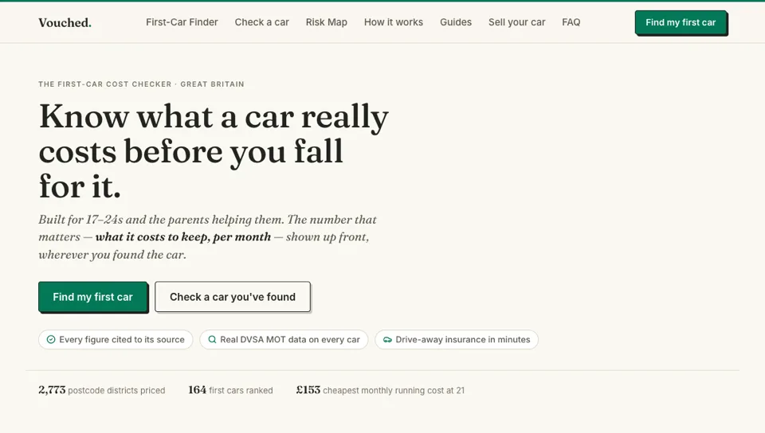

Vouched
A first-car running-cost checker for drivers aged 17 to 24 in Great Britain, and the parents helping them. It shows what a car will really cost to keep each month — insurance, tax, fuel and MOT — and what its MOT history says, wherever the car was found: on Facebook, on Gumtree or on a forecourt.
Live at vouched.autos. The repo is private.

What it does
It sits on top of the places people already buy first cars and does not compete with them for the sale. No cars are listed for sale on it.
- The First-Car Finder. Give it an age, a postcode and a budget, and it ranks 164 first cars by what they cost to keep each month: the insurance estimate plus road tax, fuel at your mileage and the MOT. The price of the car itself is shown separately, as the one-off it is.
- Check a car. Enter a registration (or paste the ad's text when there isn't one to hand) and get that car's monthly cost at your age beside its MOT history from the DVSA: a defect timeline, a mileage chart, colour and recall status, a verdict on the asking price, and questions to put to the seller. Each report has its own shareable link.
- The risk map. Every neighbourhood in England, Wales and Scotland scored for car-insurance risk, with a page for each of 2,773 postcode districts and a set of ranking pages.
- Guides on the questions a first car raises — insurance groups, where you live against what you drive, the cost of charging an electric car, the MOT failures that should end a viewing, automatic or manual — with every figure in them derived from the live data, not typed in.
- The trust pages. An accuracy page that records the site's own corrections, and a panel watch that records real observations of the insurers on a price-comparison panel the project tracks.
Where the insurance figures come from
Every insurance estimate starts from a London base: the expected annual premium for a new driver on a comprehensive black-box policy, calibrated against published young-driver premium data. Give Vouched a postcode and it scales that figure by what a risk model says your postcode district does to a premium, relative to London.
That risk model is the GB Car-Insurance Risk Map. Vouched's data engine takes the model's calibrated premium for every small area, joins each live postcode to its area, and takes the postcode-weighted median for each district. Only the ratios between areas are used, so the model's own base profile cancels out. The map on Vouched is the same model's tiles, with its per-area breakdown: for each of the 41,729 areas, the baseline plus the steps adds up exactly to the premium, and the model's commit is recorded with the data so a stale copy can be caught. Northern Ireland is not covered, for want of open data.
The rules it is held to
- No invented figures. Every number traces to a fetched, cited source, and empty beats guessed. A scan guards the guides against figures written in by hand.
- Estimates, never quotes. Every figure is an estimate based on public data, shown as a range with its confidence and the date it was checked. A price range with weak evidence behind it is shown with less weight than a strong one.
- No insurance advice. Where insurance comes up, Vouched introduces you to authorised providers for a real quote.
- No scraping of comparison sites or listing platforms. Real quotes gathered by hand are a validation set only.
How it is built
- The site: Next.js 14 (App Router) and Tailwind, in an editorial print style. The estimate, the ranking and the checks live in plain TypeScript modules, each with its tests, and the estimate reproduces the data contract's test cases exactly.
- The data engine: a Python package with no dependencies beyond the standard library, which builds the frozen data files the site reads. Its ingest refreshes weekly fuel prices from DESNZ, Euro NCAP ratings, listing-price medians from eBay's API and MOT failure rates from the DVSA's bulk extracts, and every file it writes carries a provenance record that the site shows as a "figures checked" stamp.
- Live checks: the DVSA MOT History API behind Check a car, and scheduled jobs for alerts and housekeeping, each of which refuses to run until its secret is set.
What was hard
- Reading the market right. In late July two insurer groups left the price-comparison panel the project tracks, and the cheapest quote observed rose by about half. The project first read that as the market moving and re-based every estimate upward. On 10 August it concluded the move came from who was on the panel — the insurers still on it had not moved — and reverted all of it. The panel watch, which records only what was observed, stayed.
- Configuration that fails silently. A mismatched environment-variable name once lost nine days of data without an error. The names the code reads are now listed in one place, and a guard that would default to open defaults to closed instead.